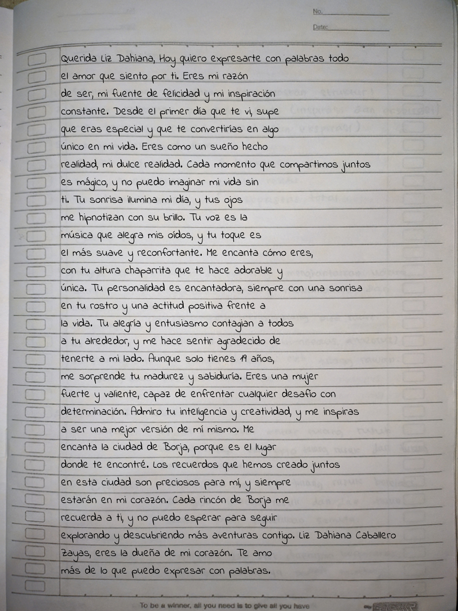

Bienvenida
¡Hola a todos!
Hoy quiero compartirles una emocionante noticia: ¡he decidido comenzar un blog personal donde estaré compartiendo fotos y cartas que he escrito para mi increíble novia! Estoy realmente emocionado de embarcarme en esta nueva aventura y tener la oportunidad de mostrarles un vistazo de nuestra hermosa historia de amor.
Para mí, el acto de escribir cartas es una forma hermosa y significativa de expresar mis sentimientos hacia mi pareja. Me permite transmitirle todo lo que está en mi corazón de una manera íntima y personal. Y ahora, al compartir algunas de estas cartas en mi blog, espero que también puedan captar un poco de la magia y el amor que compartimos juntos.
Además de las cartas, también estaré compartiendo algunas de nuestras fotos más especiales. Estas imágenes capturan momentos inolvidables en nuestra relación, desde nuestras aventuras juntos hasta los simples momentos cotidianos llenos de felicidad. Espero que al ver estas fotos, puedan sentir la alegría y el amor que nos rodea.
Mi objetivo principal al crear este blog es poder transmitir la belleza de nuestra relación y, al mismo tiempo, inspirar a otros a valorar y celebrar el amor en sus propias vidas. Creo firmemente que el amor es uno de los regalos más preciosos que podemos experimentar, y deseo compartir esa felicidad con todos ustedes.
Quiero aprovechar esta oportunidad para agradecer a mi novia por su apoyo inquebrantable y su amor incondicional. Ella es mi musa, mi inspiración y mi compañera en cada paso del camino. Sin ella, este blog no sería posible, y estoy eternamente agradecido por tenerla a mi lado.
Así que los invito a todos a visitar mi blog y unirse a nosotros en este viaje lleno de amor. Estoy seguro de que encontrarán algo especial y significativo en cada carta y en cada foto que comparto. Espero que disfruten explorando nuestra historia tanto como yo disfruto escribiéndola.
¡Gracias a todos por su apoyo y cariño!
Con amor,
Alberto Rojas.
Primera Carta Que Hice:


Hoy me encuentro aquí, compartiendo contigo la emocionante experiencia de escribir mi primera carta para mi novia. Aunque admito que al principio me sentí un poco nervioso y ansioso por expresar mis sentimientos de manera adecuada, sabía que era importante transmitirle lo mucho que significa para mí.
Me senté en un lugar tranquilo, con una hoja de papel y un bolígrafo en mano. Quería que cada palabra fuera auténtica y reflejara lo que realmente siento por ella. Tomé un momento para reflexionar sobre nuestra relación, recordando los momentos especiales que hemos compartido y cómo ha impactado mi vida de manera positiva.
Luego, comencé a escribir. Las palabras fluían de mi corazón a la punta del bolígrafo. Traté de capturar la esencia de lo que siento por ella, describiendo su impacto en mi vida, la conexión profunda que compartimos y cómo su amor me ha transformado. Quería que supiera lo agradecido que estoy por tenerla a mi lado y cómo estoy comprometido a hacerla feliz.
A medida que avanzaba en la carta, mi confianza crecía. Me sentía emocionado por expresar mis sentimientos y por la oportunidad de compartir mis pensamientos más profundos con ella. Cada palabra escrita se convertía en una promesa de amor y cuidado, en un recordatorio constante de que siempre estaré allí para ella.
Después de terminar la carta, la leí varias veces para asegurarme de que transmitía exactamente lo que quería decir. Hice algunas pequeñas correcciones y ajustes, asegurándome de que cada frase fuera significativa y conmovedora.
Escribir esta primera carta para mi novia fue una experiencia llena de amor, emoción y vulnerabilidad. Me permitió expresar mis sentimientos de una manera que las palabras habladas no siempre pueden capturar por completo. Fue un recordatorio para ambos de la belleza de nuestro amor y de la importancia de expresar nuestras emociones de manera sincera.
Estoy emocionado por todas las cartas que compartiremos en el futuro, porque sé que cada una de ellas será un tesoro lleno de amor y recuerdos. Esta primera carta es solo el comienzo de un viaje
maravilloso y estoy agradecido de poder escribir nuestras historias juntos.